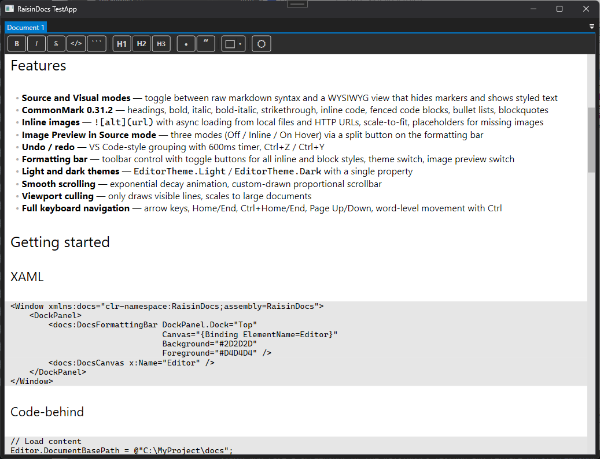

Native WPF control for editing and rendering markdown. Drop it into your application — two lines of XAML, zero browser runtimes.
No RichTextBox. No FlowDocument. No WebView2.

Adds a full Chromium runtime. Cross-boundary marshalling, different threading model, 100+ MB dependency for a text box.
Designed for rich text, not markdown. No block-level semantics, no syntax-aware wrapping. You fight the framework at every turn.
Edit in plain text, preview separately. No inline styling, no WYSIWYG. Two disconnected views of the same content.
RaisinDocs renders directly with FormattedText and GlyphTypeface, measures and wraps text itself, and draws everything — text, images, cursor, selection, scrollbar — in a single OnRender pass. One control, no heavy dependencies.
Toggle between raw markdown syntax and a WYSIWYG view. Visual mode hides markers and shows styled text; cursor navigation skips hidden syntax automatically.
Bold, italic, bold-italic, strikethrough, inline code, headings (H1–H6), fenced code blocks, bullet lists, blockquotes. CommonMark 0.31.2 compliant.
Local files and HTTP URLs. Async loading, scale-to-fit, placeholder for missing images. Source mode offers Off, Inline, and On Hover preview.
VS Code–style grouping with 600ms timer. Typing groups into one unit; cursor movement, Enter, and action switches break the group.
Light and dark themes with a single property. Frozen brushes and cached pens keep rendering fast.
Optional toolbar control with toggle buttons for all styles. Bind it to your canvas — it picks up formatting state automatically.
Three classes, clean separation. No UI dependencies in the document model.
<Window xmlns:docs="clr-namespace:RaisinDocs;assembly=RaisinDocs"> <DockPanel> <docs:DocsFormattingBar DockPanel.Dock="Top" Canvas="{Binding ElementName=Editor}" Background="#2D2D2D" Foreground="#D4D4D4" /> <docs:DocsCanvas x:Name="Editor" /> </DockPanel> </Window>
// Load and save Editor.DocumentBasePath = @"C:\MyProject\docs"; Editor.SetText(File.ReadAllText("document.md")); File.WriteAllText("document.md", Editor.GetText()); // Theme Editor.Theme = DocsCanvas.EditorTheme.Dark; // Image preview in Source mode Editor.SetImagePreview(DocsCanvas.ImagePreviewMode.Inline);
Clone and build:
git clone https://github.com/gerleim/RaisinDocs.git
cd RaisinDocs
dotnet build RaisinDocs.slnx
Run the test app:
dotnet run --project RaisinDocs.TestApp/RaisinDocs.TestApp.csproj
Run tests:
dotnet test Tests/RaisinDocs.Tests/RaisinDocs.Tests.csproj
Requirements: Windows · .NET 8+